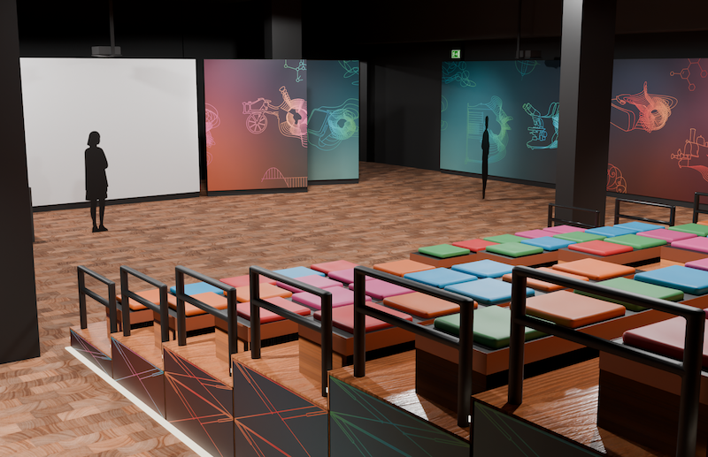
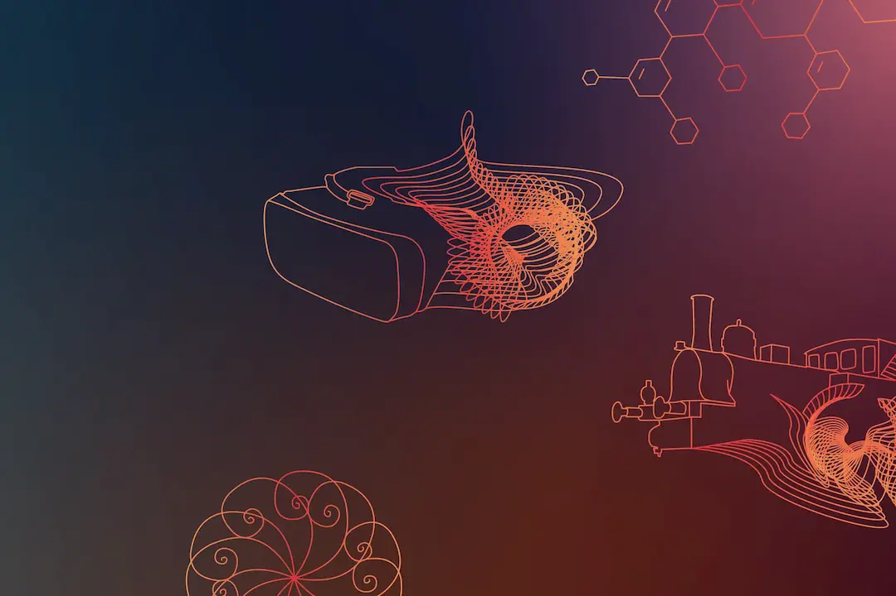
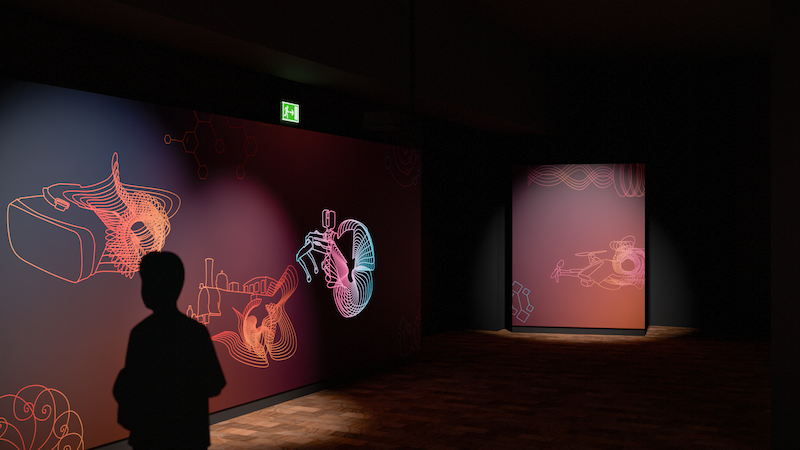
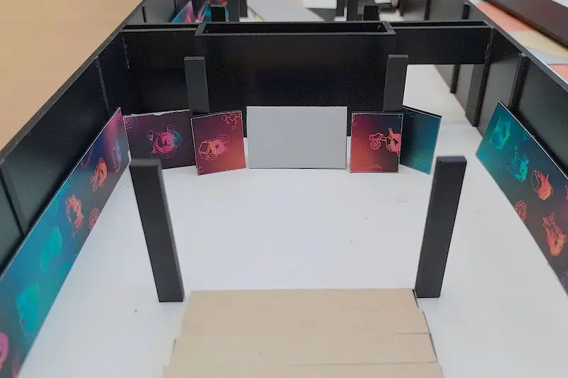

Challenge
To inspire students to consider MINT professions (math, science and information technology) and give them a positive vision of how they can shape the future with new inventions.
Solution
Show format with presentations by researchers, start-ups and inventors with a design concept that refers to past inventions but also highlights new technologies of the present.
Students are given a positive and inspiring view of their future.
Output
The result is an arena-like space in which students can immerse themselves in a place of open-mindedness and invention.
Minimalist elements such as colour gradients and geometric figures are used to reflect the atmosphere of the future.
The abstract forms of the technologies stand for the unknown and give everyone the freedom to fantasize about what our future could look like.
Four of the illustrations are animated by Conni Robe to emphasize the movement in the development of new products.



Corporate model for the design of the Arena layout.
The TECHNOarena project from the TECHNOSEUM Mannheim includes a show format for school classes on the latest inventions and a workshop where they can experiment with new technologies. As part of my freelance work I was responsible for the design concept of the arena and the workshop area in the museum. The realization will be carried out by the TECHNOSEUM and the TECHNOarena will open in September 2025.